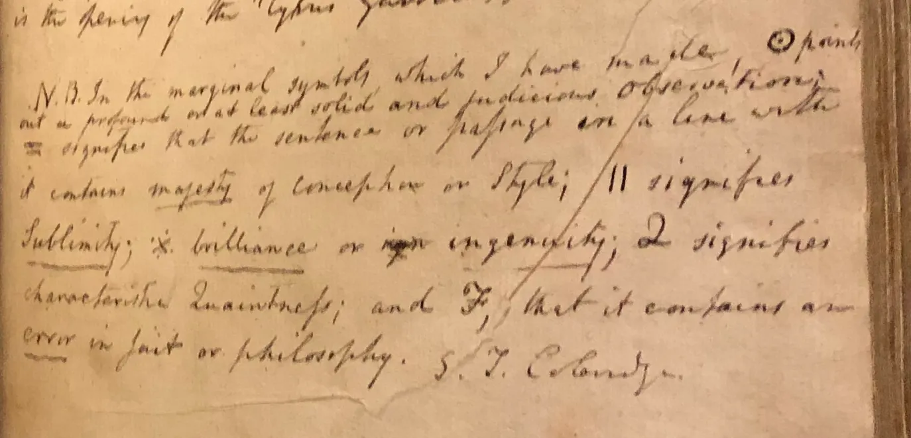
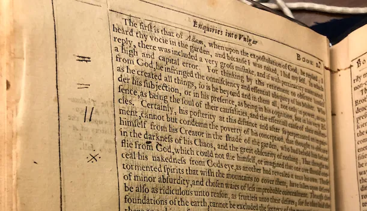
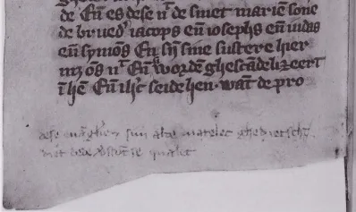
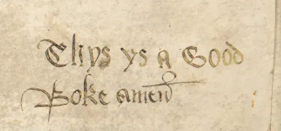
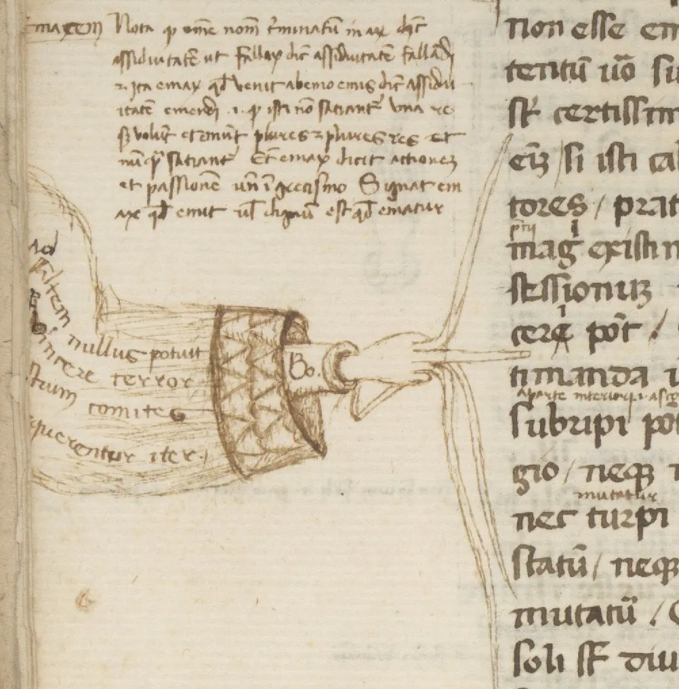
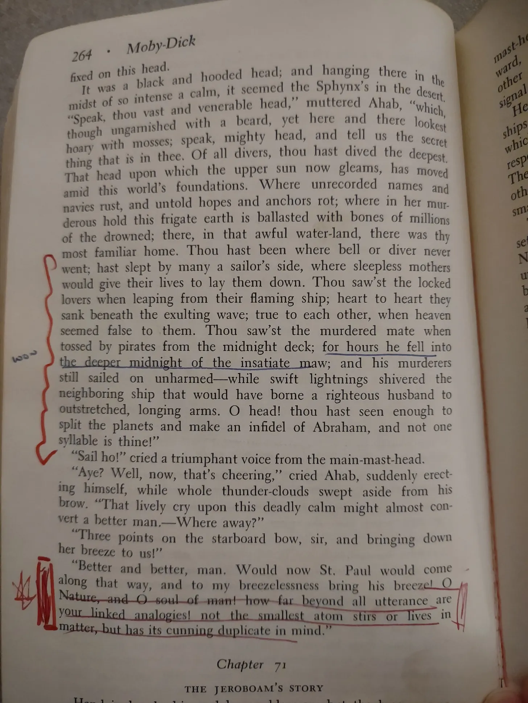

In the autumn of 1815, Samuel Taylor Coleridge — poet, opium addict, and husband of one Sara — sat down to annotate a book for another woman entirely. Her name was Sara Hutchinson, and she was, inconveniently for everyone involved, his best friend's sister-in-law. Coleridge had been in love with her for years. His chosen method of courtship was, to put it charitably, indirect: he wrote notes in the margins of books and passed the books to her. He was forty-three. He had written The Rime of the Ancient Mariner fifteen years earlier and appeared to be coasting. His marriage was, by all accounts, a well-documented catastrophe. But in the margins of his books, Coleridge remained the most rigorous mind in any room — and the margins were, apparently, also where he kept his heart.
What he left behind was not just romance. Coleridge devised an entire private annotation system — a secret language for the white space beside other people's sentences. He sketched it out by hand in a flyleaf, where it has sat, undisturbed, for two centuries:
- ◎ points out a profound, or at least solid and judicious, observation
- = the sentence or passage contains majesty of conception or style
- || signifies sublimity
- ✕ brilliance or ingenuity
- Q characteristic quaintness
- F that it contains an error in fact or philosophy
Six symbols. An entire critical vocabulary. A complete private code for responding to literature — invented, annotated, and deployed inside books belonging to a woman who was not his wife.
Coleridge left over 8,000 marginal notes across approximately 700 volumes. His annotated copies are held at the New York Public Library's Berg Collection, where his symbol key — written in his own hand — is open to inspection.


The Medieval Critics
The idea that margins are wasted space is, historically speaking, a minority opinion held mostly by people who have never read a truly maddening book.
For as long as people have carried texts, they have felt the need to respond to them in the only space available. Medieval monks were particularly enthusiastic about this. Their marginalia runs a remarkable emotional range. There was the scholar who, having ploughed through what must have been a torturously poor Latin translation of the Gospels, could not let the matter pass in silence. He reached for his pen. What he wrote — in the gutter of the page, beside the offending text, in a 14th-century hand — has survived seven hundred years with its contempt completely intact:
"Whoever translated these Gospels, did a very poor job."
Anonymous, Vienna, ÖNB, S.n. 12.857, fol. 95v — c. 1300No name. No context. Just the verdict, offered with the flat certainty of someone who has been made to read bad Latin for six hours and is not going to pretend otherwise.
Not all medieval readers were critics. A different reader, in a different manuscript, finished something that moved him and simply wrote the opposite — three words in Middle English, carved in gothic lettering at the bottom of the page, with a finality that suggests he saw no need to elaborate:
"Thys ys a Good Boke amen."
Anonymous, HRC 143 — "The Cardigan Chaucer," Harry Ransom Center, University of TexasCritics have been more elaborate since. Few have been more correct.


Between these two poles — the furious critic and the satisfied reader — medieval marginalia covers most of what any reader has ever felt. There are annotations that chase arguments down into sub-footnotes. There are personal asides that appear to have nothing to do with the text. There are doodles of animals doing inexplicable things: a rabbit on horseback, a dog reading a scroll, a knight in armour conducting a siege against a snail. Medieval scholars have theories about these. None of the theories are fully satisfying. Some things, apparently, were simply drawn.
And then there is the matter of the pointing hand.
The manicule — from the Latin for manicula, "little hand" — was the medieval reader's device for drawing attention to a passage worth noting. A small hand, drawn in the margin, its finger pointing at the line that mattered. In a 14th-century manuscript held at Berkeley's Bancroft Library, a reader used a manicule to flag a passage. The passage was long. One hand was not sufficient. So the reader drew another. And then, apparently deciding that something more was called for, employed the tentacles of an octopus to bracket the remainder. We have no record of who did this, or what the passage said. We know only that it was, apparently, very important.

Bill Gates, Arguing
Bill Gates reads with a pen in his hand. This is not a secret. He has discussed it publicly, and the photographs exist.
"Taking notes," he has explained, "helps make sure that I am really thinking hard about what is in there." This is the mild, reasonable version — the one for interviews. The private version, which he has also confirmed, is somewhat less composed.
"It's actually kind of frustrating... Oh please say something I agree with so I can get through to the end."
Bill Gates, on reading books he disagrees withGates argues with books in the margins. He has described the experience of sustained disagreement with an author as something close to physical discomfort, resolved only by continuous note-taking. A reader arguing with a dead author, alone in a room, at midnight, pen moving faster as the frustration rises. This is, by most definitions, not normal behaviour. It is also, apparently, how one of the most consequential readers of the last century chose to spend his evenings.
The medieval critics who called out bad Gospel translations would have recognised him completely. Both were doing what good note-takers do: catching the reaction before it cooled.
The Inherited Book
The most affecting marginalia often passes between people across time, without either party intending it.
A woman named Taylor Hazan inherited a copy of Moby Dick when her great-uncle died. He had loved the book. This was apparent from the physical evidence: his annotations ran throughout, in red — underlines, brackets, the occasional word written in the gutter beside a passage that had mattered to him in some way he'd wanted to remember.
When Taylor read the book, she added her own notes alongside his. Blue, so you could tell whose thoughts belonged to whom. Two generations of reading, running in parallel down the same pages, decades apart.
"I especially love the moments when our underlines and checks and hearts overlap: that our breath is taken by the words, even if those breaths happened decades apart and years after his last breath."
Taylor Hazan, on annotating her great-uncle's copy of Moby DickA margin, it turns out, is also a form of time travel.

The Most Audacious Note Ever Written
Pierre de Fermat was a 17th-century French magistrate and mathematician — a man of private habits and, it turns out, considerable nerve. In the 1630s, while working through a copy of Diophantus' Arithmetica, he encountered a problem about whole-number solutions to equations. He considered the problem. He modified it slightly — changing the power from 2 to 3, the kind of move that is either trivial or catastrophic depending entirely on whether you can prove the result. Then he picked up his pen, turned to the margin, and wrote:
"I have a truly marvellous demonstration of this proposition, which this margin is too narrow to contain."
Pierre de Fermat, annotating his copy of Diophantus' Arithmetica, c. 1637He wrote nothing else. No proof. No follow-up. Just the claim, hanging in the margin, unsigned.
Whether Fermat actually had the proof — whether he was telling the truth, bluffing brilliantly, or had genuinely convinced himself of something he'd never quite worked out — became one of the most notorious unsolved problems in mathematics. It stayed unsolved for 358 years. A British mathematician named Andrew Wiles finally proved it in 1995, after seven years of secret work and a proof that ran to over 100 pages. The margin, it turned out, was indeed too narrow. It was just, in a sense, too narrow for anyone, including Fermat.
No annotation has ever done more with less space.
The Duck
History is full of marginal notes that changed the course of mathematics, or philosophy, or the course of someone's heart. And then there is the Gorleston Psalter.
The Gorleston Psalter is a magnificently illuminated medieval psalter created around 1300 in Norfolk, England. It is held now at the British Library. Its borders are full of the intricate, expensive craftsmanship that a wealthy church commission could produce in the early 14th century.
And in one margin, added by a hand that history has not thought to record, is a drawing of a dog. Its mouth is open wide. Above the dog, written in small, careful letters, is a single word:
queck.
Anonymous, The Gorleston Psalter, c. 1300 — British LibraryThe dog says queck. It has said queck for 725 years. Someone in medieval Norfolk decided that this was worth writing down — not a theological gloss, not a scholarly correction, not a symbol system for rating sublimity. Just a dog, saying queck. The fact that it was almost certainly meant to be a duck only makes it better.
The Margin and the Pocket
None of this is, strictly speaking, about notebooks. And yet it is, entirely, about notebooks.
Coleridge devising symbols to name what moved him. The monk who could not let a bad translation pass without comment. Taylor adding blue beside her great-uncle's red. Fermat claiming he had a proof but that the space was insufficient. The person in Norfolk who simply needed, for reasons we will never know, to write down what the dog said.
They were all doing the same thing: catching a thought before it dissolved. Parking it somewhere — the two inches beside the text, the blank page of a small grid notebook, the back of an envelope on a train — before the moment passed and the thought passed with it.
The margin and the pocket notebook are the same impulse. The same refusal to let the thought evaporate. The same insistence that it was worth something, even before it was polished, even before it was finished, even before you knew exactly why. On that subject, it's worth reading about the notebook as a record of who you were.
A thought noted is different from a thought that passes through. The act of putting ink on a small surface — a margin, a grid page, a napkin, an inside cover — is the act of making something real. A draft. A bracket. A checkmark that says: this one mattered.
The margin says: I was here. I noticed.
Write something in the margins this week. It doesn't have to be brilliant. It only has to be yours.